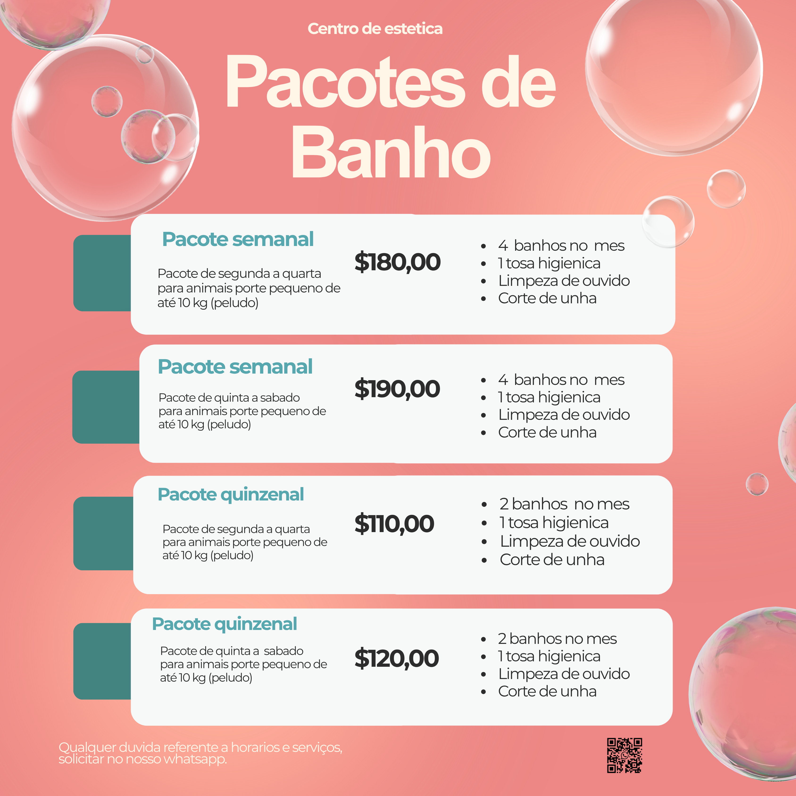

Rotina real de cuidado
Clínica, estética e bem-estar
Rondonópolis, MT e região
Cuidado veterinário completo com atendimento humano, rápido e verdadeiro.
A aLarcão Vet Pet reúne consultas, cirurgias, fisioterapia, acupuntura, farmácia, rações, petiscos e banho e tosa em um só lugar.
Plantão veterinário 24 horas
Mais de 18 anos de experiência profissional
Desde 2018 crescendo com a confiança dos tutores
- 8 anos
- de atuação em crescimento constante
- 3 reformas
- para ampliar o conforto e a estrutura
- 5 cidades
- com alcance comercial e atendimento regional
Banho e tosa
Pacotes pensados para a rotina do seu pet
Valores e condições reunidos em uma tabela dedicada para leitura com calma.
Ver tabela de pacotesAtendimento completo
Da prevenção ao tratamento, tudo caminha junto para a saúde do seu animal.
Consultas com diagnóstico ágil e orientação transparente
A clínica trabalha para identificar rápido o que o pet precisa, sempre com explicação clara para a família e foco em qualidade de vida.
- Consulta veterinária clínica
- Consulta dermatológica
- Plantão veterinário 24 horas
Bem-estar em primeiro lugar
Conduta cuidadosa para cães e gatos em todas as fases da vida.
Equipe experiente
Profissionais com ampla vivência em clínica, cirurgia e reabilitação.
Procedimentos e reabilitação com acompanhamento especializado
A aLarcão Vet Pet reúne cirurgia veterinária, fisioterapia e acupuntura para apoiar desde intervenções importantes até a recuperação funcional do pet.
- Cirurgias veterinárias
- Fisioterapia pet
- Acupuntura pet
Recuperação com mais conforto
Protocolos que ajudam mobilidade, alívio e retomada da rotina.
Conduta precisa
Atendimento técnico aliado a observação cuidadosa de cada caso.
Banho e tosa com estética, higiene e produtos de cuidado premium
Além do serviço de banho e tosa, a clínica trabalha com hidratações e pacotes recorrentes para manter pelagem, pele e conforto do animal em dia.
- Banho e tosa
- Limpeza de ouvido e corte de unha
- Pacotes semanais e quinzenais
Rotina prática para o tutor
Opções recorrentes para quem quer manter a higiene sem imprevistos.
Mais brilho e hidratação
Linhas especiais para diferentes tipos de pelagem e necessidade.
Pet shop com itens essenciais para o dia a dia do seu animal
A loja oferece linha completa de rações, petiscos, medicamentos e produtos veterinários para facilitar a rotina dos tutores em um único endereço.
- Rações para cachorro e gato
- Farmácia veterinária
- Produtos e suplementos pet
Compra com orientação
Mais segurança na escolha de produtos para saúde e alimentação.
Conveniência real
Consulta, tratamento e compras no mesmo lugar.
História que gera confiança
O espaço físico nasceu do vínculo com os clientes e continua evoluindo para receber melhor cada pet.
A aLarcão Vet Pet começou em 2018 com atendimentos domiciliares. Com o aumento da procura e a confiança dos tutores, abriu sua unidade física em Rondonópolis e já passou por três reformas para ampliar a estrutura, o conforto e o acolhimento.
A visão da clínica é trabalhar pelo bem-estar animal com verdade, transparência e atenção a cada detalhe do diagnóstico, criando um cuidado mais seguro para os pets e mais tranquilidade para as famílias.
Clínica veterinária
Pet shop
Banho e tosa
Farmácia veterinária
Atendimento regional

Ofertas e cuidados recorrentes
Condições que ajudam a manter higiene, hidratação e rotina de bem-estar sempre em dia.
Pacotes que facilitam a rotina do tutor
A clínica já trabalha com opções semanais e quinzenais para pets de pequeno porte, reunindo banhos no mês, tosa higiênica, limpeza de ouvido e corte de unha.
- Pacotes semanais a partir de R$ 180,00
- Pacotes quinzenais a partir de R$ 110,00
- Condições apresentadas diretamente no WhatsApp da clínica

Ambiente leve e rotina visual da marca
Um espaço pensado para acolher, cuidar e deixar o pet bem do começo ao fim do atendimento.
O cuidado da aLarcão Vet Pet combina técnica, carinho e presença constante no dia a dia dos tutores. Isso aparece desde o consultório até os serviços de estética e bem-estar.
Consultas e orientações clínicas
Estética pet com acompanhamento
Produtos selecionados para saúde e higiene
Fisioterapia pet
Acupuntura pet
Táxi dog
Contato e atendimento
Fale com a clínica, agende seu atendimento e encontre tudo o que seu pet precisa em Rondonópolis.
Endereço
Rua Jose Barriga, 138, Centro
Rondonópolis - MT
Horários
Segunda a sexta: 08h às 18h
Sábado: 08h às 12h
Plantão veterinário 24 horas
Telefone e WhatsApp
Região de interesse
Rondonópolis, Pedra Preta, Poxoréu, Guiratinga e Jaciara.